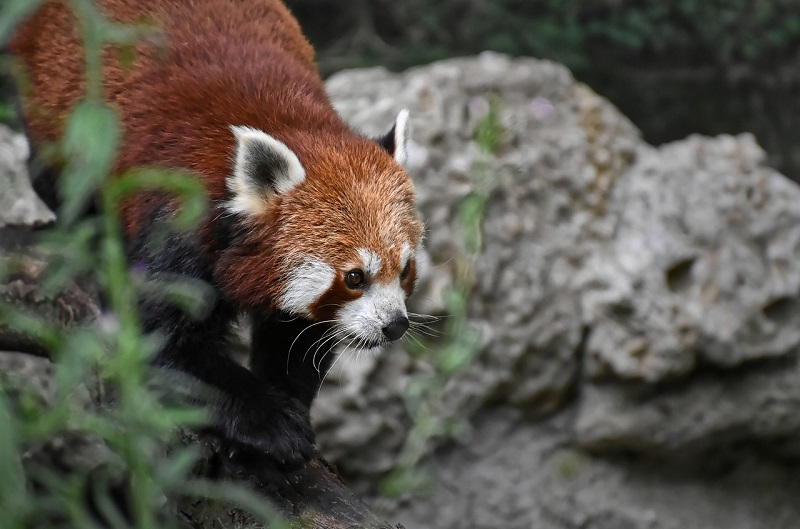
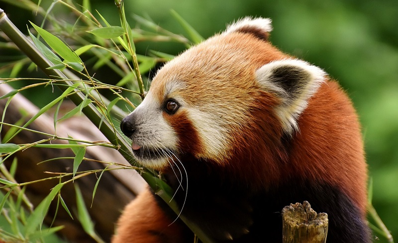
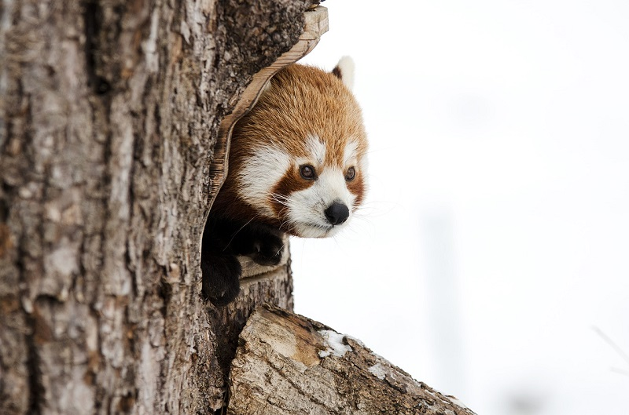
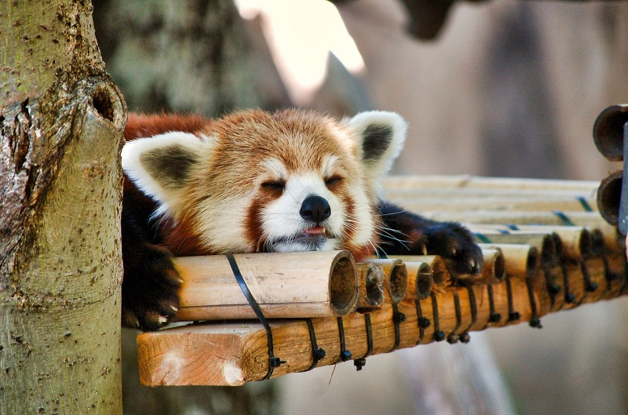
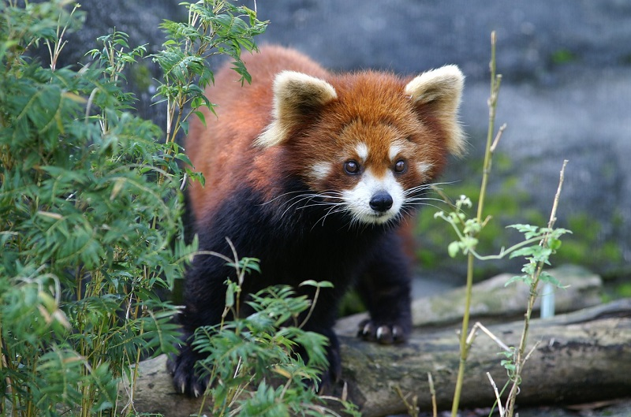
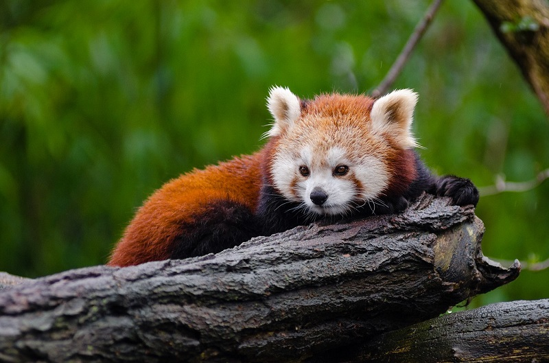

Когда красные панды чувствуют угрозу, они встают на задние лапы и вытягивают когти, чтобы выглядеть устрашающе. Для животного мира наверное это выглядит грозно. А вот по людским меркам - довольно мило и забавно.

Красные панды чуть больше обычной кошки. Самые крупные самцы едва достигают 15 кг. Красные панды имеют уникальное строение тела, что позволяет быть им идеальными акробатами.

Белая раскраска под глазами у красных панд не просто так. Он помогает детенышам не потеряться в темноте. Мама хорошо видит эти белые пятна на морде и ночью легко находит малышей.

Красные панды предпочитают ночной образ жизни. Днем они обычно спят на деревьях, особенно предпочитая дупла. Издают забавные звуки, напоминающие птичий щебет.

Несмотря на название «панда», черно-белые мишки являются для них дальними родственниками. А более близкие - куница, енот и ласка.

В дикой природе находятся на грани вымирания. Потому что люди их отстреливали, чтобы сделать «прикольные красные шапки».